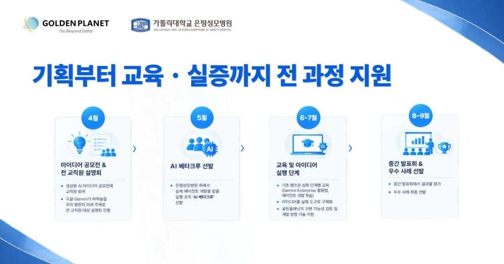
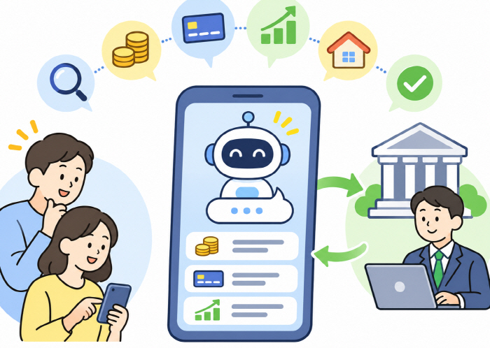
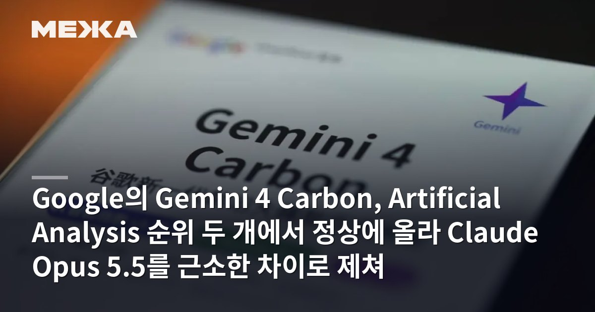
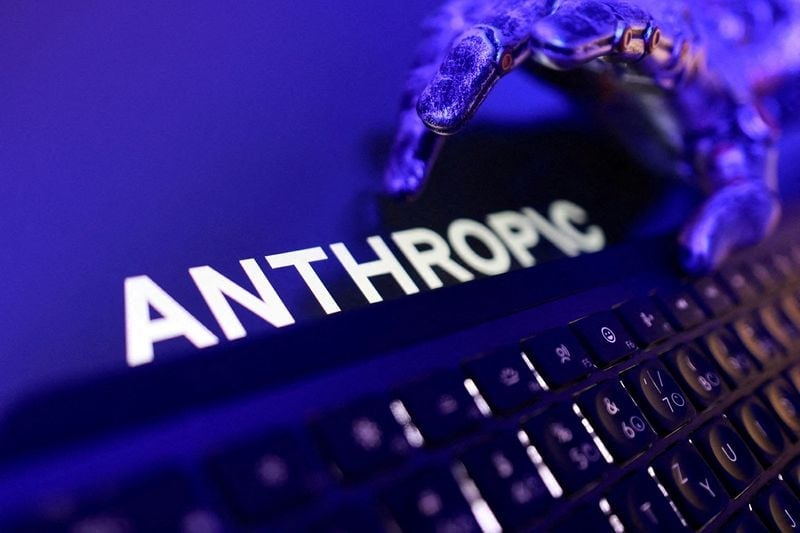

01 · KR
골든플래닛 × 은평성모병원
교직원이 직접 참여하는 Gemini Enterprise 체계
양사는 약 4개월간 Gemini Enterprise 기반 생성형 AI PoC를 진행하고, 교직원이 직접 참여하는 활용 체계와 병원 업무용 AI 에이전트 개발 성과를 공개했다고 밝혔다.
원문 보기 ↗ADDIT INSIGHT
현장 구성원이 직접 쓰고 검증하는 구조가 있어야 엔터프라이즈 AI가 실제 업무로 내려온다.
Gemini 4 Carbon의 성능 순위, 국내 AI 도입 확대, 워터마크·대화 통합·저작권 경고를 통해 AI를 신뢰 가능한 업무 접점으로 설계하는 방법을 정리합니다.
오늘은 더 좋은 모델을 고르는 일에서 한 걸음 더 나아가, 고객이 보고 조직이 책임질 수 있는 AI 접점을 설계합니다.
Gemini 4 Carbon이 두 지표에서 Claude Opus 5.5를 앞섰다는 보도가 나왔다.
Claude는 코딩을 넘어 칩 설계와 금융 데이터 업무로 확장되고 있다.
워터마크와 데스크톱 통합은 AI 사용의 추적성과 연속성을 높인다.
국내 이용 확대와 병원·대학·금융권 도입이 업무 접점을 바꾸고 있다.
저작권 경고는 AI 답변에 출처·권리·검수까지 요구한다.

교직원이 직접 참여하는 Gemini Enterprise 체계
양사는 약 4개월간 Gemini Enterprise 기반 생성형 AI PoC를 진행하고, 교직원이 직접 참여하는 활용 체계와 병원 업무용 AI 에이전트 개발 성과를 공개했다고 밝혔다.
원문 보기 ↗현장 구성원이 직접 쓰고 검증하는 구조가 있어야 엔터프라이즈 AI가 실제 업무로 내려온다.
여러 모델을 하나의 학습·연구 플랫폼으로 묶다
우석대는 ChatGPT·Claude·Gemini를 통합한 멀티 LLM 플랫폼 ‘AI:ON 우석’을 운영하기 시작했다고 밝혔다. 전공 학습, 연구, 취업 준비를 한 환경에서 지원하는 교육용 구조다.
원문 보기 ↗모델을 고르는 시간을 줄이고 학습 목표와 검수 기준을 앞세우면 멀티모델의 장점이 커진다.

답변 안에서 먼저 만나는 금융 브랜드
아시아투데이는 ChatGPT·Gemini 등으로 금융정보를 찾는 소비자가 늘면서 금융사들이 AI가 자사 정보와 상품을 정확히 인용하도록 콘텐츠와 홈페이지를 정비하고 있다고 보도했다.
원문 보기 ↗검색 유입을 기다리는 시대에서 AI 답변에 인용될 수 있는 정보 구조를 설계하는 시대로 넘어가고 있다.

벤치마크 1위가 업무 선택지로 번지는 순간
해당 보도에 따르면 Gemini 4 Carbon은 Artificial Analysis Intelligence Index V5에서 59점, AA-Omniscience 테스트에서 54점을 기록했다. 구글은 Fairwind 프로그램을 통해 일부 사이버보안 담당자에게 우선 제공하고 있다.
원문 보기 ↗성능 1위보다 어떤 사용자·업무에 먼저 배치할지까지 설계해야 벤치마크가 사업 성과로 이어진다.

Claude를 칩 설계·금융 데이터 업무로 확장하다
Investing.com은 IPO를 앞둔 Anthropic이 Claude의 칩 설계 능력을 투자자에게 강조했다고 보도했다. 별도 원문으로 LSEG가 Anthropic과 손잡고 Claude 사용자에게 금융 데이터 접근을 제공한다고 전했다.
원문 보기 ↗AI 제품의 다음 확장은 ‘무엇을 잘하나’보다 ‘어떤 전문 데이터와 시스템에 연결되나’에서 결정된다.